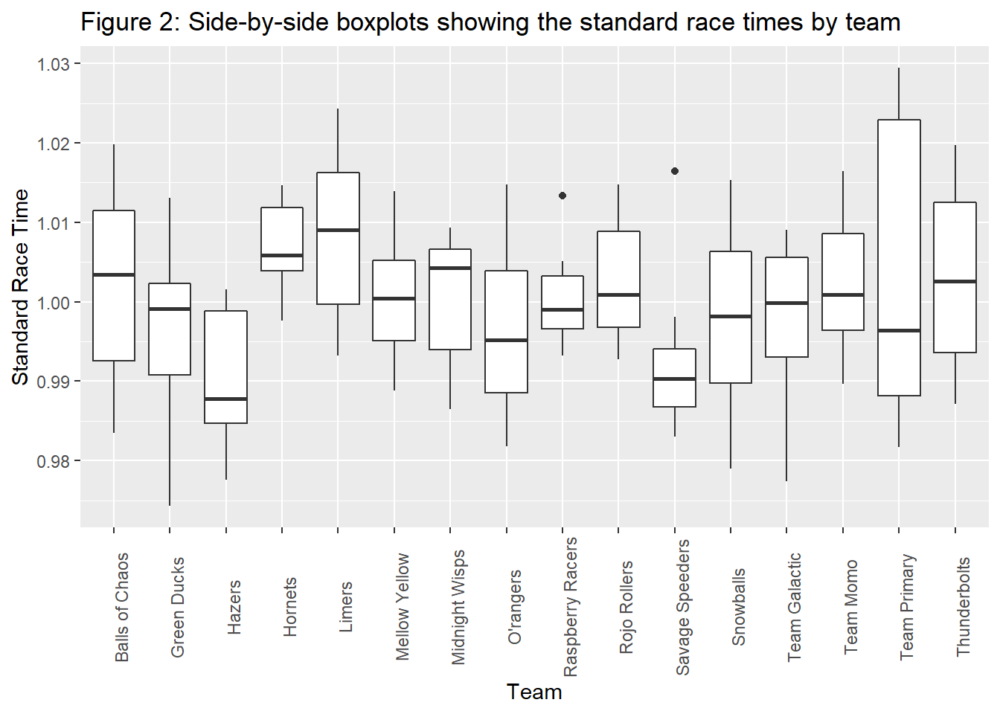
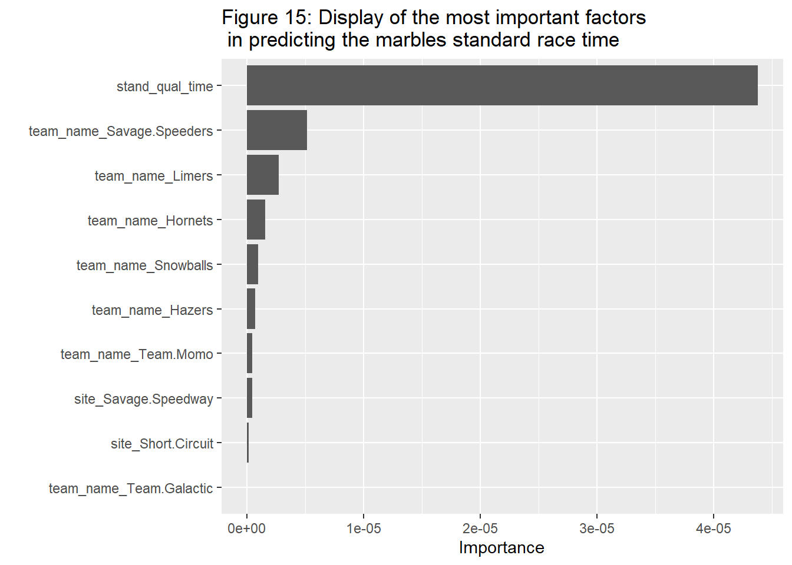

Tidy Tuesday 2
This tidy tuesday exercise is looking at marble racing. Here is a link to the github repository to find the data as well as some more information about the marble racing. https://github.com/rfordatascience/tidytuesday/blob/master/data/2020/2020-06-02/readme.md
Reading in packages.
library(tidyverse)
library(skimr)
library(janitor)##
## Attaching package: 'janitor'## The following objects are masked from 'package:stats':
##
## chisq.test, fisher.testlibrary(tidymodels)
library(ggpubr)
library(rpart.plot)
library(caret) # for classification and regression training## Loading required package: lattice##
## Attaching package: 'caret'## The following objects are masked from 'package:yardstick':
##
## precision, recall, sensitivity, specificity## The following object is masked from 'package:purrr':
##
## liftlibrary(kernlab) # for fitting SVMs##
## Attaching package: 'kernlab'## The following object is masked from 'package:purrr':
##
## cross## The following object is masked from 'package:scales':
##
## alpha## The following object is masked from 'package:ggplot2':
##
## alphalibrary(vip)##
## Attaching package: 'vip'## The following object is masked from 'package:utils':
##
## viReading in the data.
set.seed(34)
# Get the Data
marbles <- readr::read_csv('https://raw.githubusercontent.com/rfordatascience/tidytuesday/master/data/2020/2020-06-02/marbles.csv')## Rows: 256 Columns: 14## -- Column specification --------------------------------------------------------
## Delimiter: ","
## chr (9): date, race, site, source, marble_name, team_name, pole, host, notes
## dbl (5): time_s, points, track_length_m, number_laps, avg_time_lap##
## i Use `spec()` to retrieve the full column specification for this data.
## i Specify the column types or set `show_col_types = FALSE` to quiet this message.# Or read in with tidytuesdayR package (https://github.com/thebioengineer/tidytuesdayR)
# Either ISO-8601 date or year/week works!
#This will create copies of each dataset into my own folder for the online portfolio
marbles %>%
write_csv("data/tidy_tuesday/marbles.csv")
#Looking at all of the details pertaining to the data set.
skimr::skim(marbles)| Name | marbles |
| Number of rows | 256 |
| Number of columns | 14 |
| _______________________ | |
| Column type frequency: | |
| character | 9 |
| numeric | 5 |
| ________________________ | |
| Group variables | None |
Variable type: character
| skim_variable | n_missing | complete_rate | min | max | empty | n_unique | whitespace |
|---|---|---|---|---|---|---|---|
| date | 0 | 1.00 | 8 | 9 | 0 | 16 | 0 |
| race | 0 | 1.00 | 4 | 4 | 0 | 16 | 0 |
| site | 0 | 1.00 | 7 | 15 | 0 | 8 | 0 |
| source | 0 | 1.00 | 34 | 34 | 0 | 16 | 0 |
| marble_name | 0 | 1.00 | 4 | 9 | 0 | 32 | 0 |
| team_name | 0 | 1.00 | 6 | 16 | 0 | 16 | 0 |
| pole | 128 | 0.50 | 2 | 3 | 0 | 16 | 0 |
| host | 0 | 1.00 | 2 | 3 | 0 | 2 | 0 |
| notes | 249 | 0.03 | 37 | 100 | 0 | 7 | 0 |
Variable type: numeric
| skim_variable | n_missing | complete_rate | mean | sd | p0 | p25 | p50 | p75 | p100 | hist |
|---|---|---|---|---|---|---|---|---|---|---|
| time_s | 3 | 0.99 | 190.84 | 169.13 | 17.76 | 28.40 | 36.28 | 338.16 | 492.01 | ▇▁▁▇▁ |
| points | 128 | 0.50 | 6.45 | 7.74 | 0.00 | 0.00 | 3.00 | 11.25 | 26.00 | ▇▂▂▁▁ |
| track_length_m | 0 | 1.00 | 13.22 | 0.95 | 11.90 | 12.62 | 13.02 | 14.13 | 14.55 | ▅▅▂▁▇ |
| number_laps | 0 | 1.00 | 6.25 | 5.53 | 1.00 | 1.00 | 5.00 | 10.25 | 16.00 | ▇▁▃▂▂ |
| avg_time_lap | 3 | 0.99 | 29.70 | 5.55 | 17.76 | 25.94 | 30.05 | 33.65 | 41.62 | ▃▆▇▇▂ |
Cleaning the data. I am making it more horizontal than vertical. I am creating variables for the different times (qualifying and races).
#Marbles2 is just removing some variables I do not want and then rearranging the data so I can make it horizontal
marbles2 <- marbles %>% select(-date, -source, -notes) %>% mutate(type_of_race = ifelse(grepl("Q", race), "qualifying", "race"),
qual_time = ifelse(grepl("Q", race), avg_time_lap, NA),
avg_race_time = ifelse(grepl("R", race), avg_time_lap, NA),
total_race_time = ifelse(grepl("R", race), time_s, NA))
#Splitting races from qualifiers.
Qualify <- marbles2 %>% filter(type_of_race == "qualifying") %>% select(site, marble_name, qual_time)
Race <- marbles2 %>% filter(type_of_race == "race") %>% select(-pole, -type_of_race, -qual_time, -time_s, -avg_time_lap)
#Combining the two data sets again so it will be horizontal not vertical and combining them by the name of the marble
clean_data = merge(Race, Qualify,by=c("site","marble_name"))Exploratory Analysis
Some things I want to check out and look at will be how many unique racers are there and how many times each one race in official races. I also want to check how their one lap qualifying lap compares to their actual average lap time. The final thing I want to check out is the total number of points each team earned and if there was some teams that either dominated or struggled compared to the others.
When looking at the number of unique marbles within the races, we can see that there are a total of 32 and each raced four times. I also grouped them by teams as well. This shows that there were two racers per team and they both raced 4 times each. This makes sense as there is a total of eight races within this data set. Therefore the two racers split races for the team.
Table 1
#Creating a table using the count function to count the number of marbles are displayed in the data specifically subsetted to only the offical races
clean_data %>% group_by(team_name, marble_name) %>% summarise(count = n()) %>% ggtitle("Table 1: Number of races for each marble")## `summarise()` has grouped output by 'team_name'. You can override using the `.groups` argument.## $title
## # A tibble: 32 x 3
## # Groups: team_name [16]
## team_name marble_name count
## <chr> <chr> <int>
## 1 Balls of Chaos Anarchy 4
## 2 Balls of Chaos Clutter 4
## 3 Green Ducks Billy 4
## 4 Green Ducks Mallard 4
## 5 Hazers Hazy 4
## 6 Hazers Smoggy 4
## 7 Hornets Hive 4
## 8 Hornets Vespa 4
## 9 Limers Limelime 4
## 10 Limers Sublime 4
## # ... with 22 more rows
##
## $subtitle
## [1] "Table 1: Number of races for each marble"
##
## attr(,"class")
## [1] "labels"Figure 1 shows 8 scatterplots displaying the qualifying times versus the average lap times for each race. We can see for most of the races that there is no association except for race 2 and somewhat of race 8.
#Creating scatterplots for each race and comparing the qualifying time to the average race time
plot1 <- clean_data %>% filter(race=="S1R1") %>% ggplot(aes(x=qual_time, y=avg_race_time)) + geom_point() + ggtitle("Race 1") + xlab("Qualifying time") + ylab("Average lap time")
plot2 <- clean_data %>% filter(race=="S1R2") %>% ggplot(aes(x=qual_time, y=avg_race_time)) + geom_point() + ggtitle("Race 2") + xlab("Qualifying time") + ylab("Average lap time")
plot3 <- clean_data %>% filter(race=="S1R3") %>% ggplot(aes(x=qual_time, y=avg_race_time)) + geom_point() + ggtitle("Race 3") + xlab("Qualifying time") + ylab("Average lap time")
plot4 <- clean_data %>% filter(race=="S1R4") %>% ggplot(aes(x=qual_time, y=avg_race_time)) + geom_point() + ggtitle("Race 4") + xlab("Qualifying time") + ylab("Average lap time")
plot5 <- clean_data %>% filter(race=="S1R5") %>% ggplot(aes(x=qual_time, y=avg_race_time)) + geom_point() + ggtitle("Race 5") + xlab("Qualifying time") + ylab("Average lap time")
plot6 <- clean_data %>% filter(race=="S1R6") %>% ggplot(aes(x=qual_time, y=avg_race_time)) + geom_point() + ggtitle("Race 6") + xlab("Qualifying time") + ylab("Average lap time")
plot7 <- clean_data %>% filter(race=="S1R7") %>% ggplot(aes(x=qual_time, y=avg_race_time)) + geom_point() + ggtitle("Race 7") + xlab("Qualifying time") + ylab("Average lap time")
plot8 <- clean_data %>% filter(race=="S1R8") %>% ggplot(aes(x=qual_time, y=avg_race_time)) + geom_point() + ggtitle("Race 8") + xlab("Qualifying time") + ylab("Average lap time")
#Joining all of the plots into one large plot
joint = ggarrange(plot1,plot2,plot3,plot4,plot5,plot6,plot7,plot8, ncol=4, nrow=2)## Warning: Removed 1 rows containing missing values (geom_point).
## Warning: Removed 1 rows containing missing values (geom_point).
## Warning: Removed 1 rows containing missing values (geom_point).annotate_figure(joint, top = text_grob("Figure 1: Scatterplots of all the races comparing \n the average race time and the qualified time", size = 15))
From table 2 we can see that the Savage Speeders and Hazers dominated the rest of the teams in terms of total points earned throughout the season.
Table 2
#Creating a table to show the teams overall season points
clean_data %>% group_by(team_name) %>% summarise(total_points = sum(points)) %>% arrange(desc(total_points)) %>% ggtitle("Table 2: Total points for each team for this season of racing")## $title
## # A tibble: 16 x 2
## team_name total_points
## <chr> <dbl>
## 1 Savage Speeders 101
## 2 Hazers 94
## 3 O'rangers 69
## 4 Snowballs 66
## 5 Green Ducks 64
## 6 Team Galactic 64
## 7 Team Primary 54
## 8 Team Momo 49
## 9 Thunderbolts 49
## 10 Balls of Chaos 46
## 11 Mellow Yellow 44
## 12 Midnight Wisps 34
## 13 Rojo Rollers 32
## 14 Raspberry Racers 27
## 15 Limers 25
## 16 Hornets 8
##
## $subtitle
## [1] "Table 2: Total points for each team for this season of racing"
##
## attr(,"class")
## [1] "labels"Looking at this data, we have eight different races with each track having its own specifications such as length of track and laps. I want to standardize this in some way. Following Randy Olsen’s way of standardizing found in this article, I will use the similar approach. This approach will be dividing the marbles individual race times with the average race time for each racer for each race. This will act as my outcome. I want to use the team name as my main predictor to see if one team has overall faster marbles (this is kind of funny to think about. We can think of if a marble is more smooth and has no scratches on it so it goes faster or if there are different sized marbles that could also factor in). One thing that could show up is having two different ‘populations’ within the team as one marble could be very slow and the other marble on the team is really fast. Therefore I will run one more exploratory analysis to see if there is a difference. I will also include the variables standard qualifying time (which is the same idea as the standard race time), host, and site as other predictor variables.
From Figure 2, we can see that there is some variability between the teams and some of these are significantly different than the others. In reality they all should be the same as all of the marbles are supposed to be the same and no distictions should be present but this boxplot tells different.
#Creating the average race time and qualifying times using the summarise function
mean_time <- clean_data %>% group_by(race) %>% summarise(mean_racetime = mean(total_race_time, na.rm=TRUE),
mean_qualtime = mean(qual_time, na.rm=TRUE))
#Creating multiples for each time to be able to line them up in the data set
mean_time <- mean_time[rep(seq_len(nrow(mean_time)), each = 16), ] %>% arrange(race) %>% select(-race)
#Arranging the data set so I can line up the observations for both data sets
clean_data <- clean_data %>% arrange(race)
#Combining the two data sets and creating the standard times for both the races and qualifying times
data <- cbind(clean_data,mean_time) %>% mutate(stand_race_time = total_race_time/mean_racetime,
stand_qual_time = qual_time/mean_qualtime)
data <- data %>% filter(complete.cases(.))
#Creating the side by side boxplots to show the difference in the standard race times
data %>% ggplot(aes(x=team_name, y=stand_race_time)) + geom_boxplot() + theme(axis.text.x = element_text(angle = 90)) + ggtitle("Figure 2: Side-by-side boxplots showing the standard race times by team") + xlab("Team") + ylab("Standard Race Time")
I will also create a test/training data sets.
#This is splitting the data using a proportion of 1/4 test and 3/4 training
split_data <- initial_split(data, prop = 3/4)
#This is assigning acutal data sets to the ones that were made
training <- training(split_data)
test <- testing(split_data)
#creating a cross-validation 5-fold
cvfold_data = vfold_cv(training, v = 5, repeats = 5, strata = stand_race_time)Next I will create run a recipe for the full model and a recipe for the null model. From the null model, the rmse values are very low which could mean the is not too much variability between the values of the standard race times than I thought. The values are 0.0113 and 0.0113 for the training and test data set, respectfully.
#Setting the linear model type
lm_mod <- linear_reg() %>% set_engine("lm")
#This is creating the full model recipe
stand_race_rec <- recipe(stand_race_time ~ team_name + site + stand_qual_time + host, data= training) %>% step_dummy(all_nominal_predictors())
#This is creating the null model recipe
nulltrain_rec <- recipe(stand_race_time ~ 1, data = training) %>% step_dummy(all_nominal_predictors())
#A workflow and fitted object is created for the null model
nulltrain_wrkflow <- workflow() %>% add_model(lm_mod) %>% add_recipe(nulltrain_rec)
nulltrain_fit <- nulltrain_wrkflow %>% fit(data=training)
#We are augmenting for both the train and test data and then finding each rmse
augment(nulltrain_fit, training) %>% rmse(truth = stand_race_time, .pred)## # A tibble: 1 x 3
## .metric .estimator .estimate
## <chr> <chr> <dbl>
## 1 rmse standard 0.0113augment(nulltrain_fit, test) %>% rmse(truth = stand_race_time, .pred)## # A tibble: 1 x 3
## .metric .estimator .estimate
## <chr> <chr> <dbl>
## 1 rmse standard 0.0113Fitting a tree
The first type of ML tuning I am using is a simple tree. For this tree, we need to have multiple components. The first is specifying the specific type of model to use. This code below is creating the tree model and to look at a regression type of outcome.
#Creating the tree specification for a regression type of outcome
tune_spec <-
decision_tree(
cost_complexity = tune(),
tree_depth = tune()
) %>%
set_engine("rpart") %>%
set_mode("regression")
#creating a tree grid
tree_grid <- grid_regular(cost_complexity(),
tree_depth(),
levels = 5)The next part is to create a workflow for the tree modeling. The model is the specification created above and the recipe is our full model recipe for the standard race time. Next we will apply our cross-validation 5-fold data in terms of tuning with a grid. This will create multiple models that will hopefully find a better model than the null model.
#Making a wirkflow for the tree models. This uses the tuning specification above as the model type and the full model for standard race time as the recipe
tree_wf <- workflow() %>%
add_model(tune_spec) %>%
add_recipe(stand_race_rec)
#We re resampling the tree workflow by using the tune grid function and our cross-validation 5-fold data
tree_res <-
tree_wf %>%
tune_grid(
resamples = cvfold_data,
grid = tree_grid
)Now that we have created our tree, we can look at the results. The first plot shows the different models tested and their respected rmse values. The next table is showing which model between the different trees performed the best in terms of the lowest rmse which results in model 1.
#The autoplot function shows basically the process of the tuning process
tree_res %>% autoplot() + ggtitle("Figure 3: Process of tuning for the tree model")
Table 3
#selecting the best tree with the lowest rmse
best_tree <- tree_res %>%
select_best("rmse")
best_tree## # A tibble: 1 x 3
## cost_complexity tree_depth .config
## <dbl> <int> <chr>
## 1 0.0000000001 1 Preprocessor1_Model01#putting in the best tree found into its own workflow
final_wf_tree <-
tree_wf %>%
finalize_workflow(best_tree)
#fitting the tree data into a fit object
tree_fit <- final_wf_tree %>% fit(data=training)We plotted what the actual tree looks like. We also plotted a scatterplot of the predicted values versus the actual values, and a residual plot for this model. We can see that this tree does not really have a good fit as the values only are on two discrete predicted values and this also shows on the residual plot as well.
#This displays the tree
rpart.plot(extract_fit_parsnip(tree_fit)$fit, roundint=FALSE)
#We are augenting the tree fit object with the train data to help produce a mean rmse
aug_tree <- augment(tree_fit, training) %>% mutate(residual = stand_race_time - .pred)
#This is a scatterplot showing the predicted values versus the actual values of body temperature
tree_predvsobs_plot <- aug_tree %>% ggplot(aes(x=stand_race_time, y=.pred)) + geom_point() + geom_abline(intercept = 0, slope=1) + ggtitle("Figure 4: scatterplot of predicted values versus the observed values of \n standard race times with a reference line showing exact prediction \n (for Tree model)") + xlab("Standard Race Time") + ylab("Predicted values")
tree_predvsobs_plot
#This is showing the residual plot
tree_resid_plot <- aug_tree %>% ggplot(aes(x=.pred, y=residual)) + geom_point() + geom_hline(yintercept = 0) + ggtitle("Figure 5: residual plot for Tree model") + xlab("Predicted values") + ylab("Residuals")
tree_resid_plot
In Table 4, this compares the two RMSE’s for the best model (model 1) from tree modeling and then for the null model. We can see that the RMSE is smaller but it is not big of a difference. However I guess relatively it is pretty different.
Table 4
#comparing the tree models with the null model
tree_res %>% show_best(n=1)## Warning: No value of `metric` was given; metric 'rmse' will be used.## # A tibble: 1 x 8
## cost_complexity tree_depth .metric .estimator mean n std_err .config
## <dbl> <int> <chr> <chr> <dbl> <int> <dbl> <chr>
## 1 0.0000000001 1 rmse standard 0.0104 25 0.000276 Preproces~augment(nulltrain_fit, training) %>% rmse(truth = stand_race_time, .pred)## # A tibble: 1 x 3
## .metric .estimator .estimate
## <chr> <chr> <dbl>
## 1 rmse standard 0.0113Fitting a LASSO Model
The next type of model we will be using is the LASSO model. It has a similar set up to the tree as we set a specific model type and then use it in a workflow for LASSO. The recipe is the same full model for standard race times.
#Creating the lasso model type. This uses the glmnet engine
lasso_mod <-
linear_reg(penalty = tune(), mixture = 1) %>%
set_mode("regression") %>%
set_engine("glmnet")
#We are setting the LASSO workflow which similar to the tree, it uses the full model for the recipe and then the specific LASSO model I just made
lasso_workflow <-
workflow() %>%
add_model(lasso_mod) %>%
add_recipe(stand_race_rec)We need to create a grid for tuning again using the cross-validation 5-fold data. This will eventually create multiple LASSO models to compare and find the best performing one by rmse.
#creating a grid for the LASSO
lasso_reg_grid <- tibble(penalty = 10^seq(-4, -1, length.out = 30))
#Using tune grid to help create the tuning process using the cross-validation 5-fold
lasso_res <-
lasso_workflow %>%
tune_grid(cvfold_data,
grid = lasso_reg_grid,
control = control_grid(save_pred = TRUE),
metrics = metric_set(rmse))Figure 6 shows the transition from the tuning to finding the model with the lowest rmse and we see that the model with the lowest rmse is model 12 in Table 5. This was selected by the select_best function and specifying it to looking at rmse. We then used this best model into a new workflow which will be used to create a fit object to show the value of rmse.
#The autoplot function shows basically the process of the tuning process
lasso_res %>% autoplot() + ggtitle("Figure 6: Display of the model selection process \n and its respected RMSE values")
Table 5
#This is finding the best model with the lowest rmse
lasso_best <-
lasso_res %>%
show_best("rmse", n=1)
lasso_best## # A tibble: 1 x 7
## penalty .metric .estimator mean n std_err .config
## <dbl> <chr> <chr> <dbl> <int> <dbl> <chr>
## 1 0.00137 rmse standard 0.0105 25 0.000286 Preprocessor1_Model12#Creating a workflow that only included the best model
final_wf_lasso <-
lasso_workflow %>%
finalize_workflow(lasso_best)
#creating a fit object to help show the predictions of each standard race time
lasso_fit <- final_wf_lasso %>% fit(data=training)Figures 7 and 8 show the predicted values versus actual values and the the residual plot. From Figure 7, we can see a better plot than the tree one as there is no discrete values but it is still not getting the whole trend down. With the line being the slope of 1, this would be the exact prediction of a standard race time, there is still some spread of the data and one could say there is a slight trend upward but at the same time another could say there is no trend at all between the predicted and actual values. This can also be seen by Figure 8 as the points are still spread apart.
#Creating the residuals and displaying the scatterplot of the predicted values to the observed values of body temp using LASSO
aug_lasso <- augment(lasso_fit, training) %>% mutate(residual = stand_race_time - .pred)
lasso_predvsobs_plot <- aug_lasso %>% ggplot(aes(x=stand_race_time, y=.pred)) + geom_point() + geom_abline(intercept = 0, slope=1) + ggtitle("Figure 7: scatterplot of predicted values versus the observed values \n of the standard race times with a reference line showing exact prediction \n (for LASSO model)") + xlab("Standard Race Time") + ylab("Predicted values")
lasso_predvsobs_plot
#Residual plot
lasso_resid_plot <- aug_lasso %>% ggplot(aes(x=.pred, y=residual)) + geom_point() + geom_hline(yintercept = 0) + ggtitle("Figure 8: residual plot for LASSO model") + xlab("Predicted values") + ylab("Residuals")
lasso_resid_plot
To compare the best LASSO model to the null model, we can see the mean rmse is smaller than the null rmse, 0.0105 and 0.0113, respectively. This value of the rmse for the LASSO model is roughly the same as the simple tree model. Since the tree model is more simpler, for now I would choose that model over LASSO. But I will test two more different models.
Table 6
#comparing the rmse from the LASSO model to the null model
lasso_res %>% show_best(n=1)## # A tibble: 1 x 7
## penalty .metric .estimator mean n std_err .config
## <dbl> <chr> <chr> <dbl> <int> <dbl> <chr>
## 1 0.00137 rmse standard 0.0105 25 0.000286 Preprocessor1_Model12augment(nulltrain_fit, training) %>% rmse(truth = stand_race_time, .pred)## # A tibble: 1 x 3
## .metric .estimator .estimate
## <chr> <chr> <dbl>
## 1 rmse standard 0.0113Random Forest
The next type of model is the random forest approach. Just like the other two models, we have to start with a model type specific to random forest for a regression outcome and apply it to a workflow. This workflow will be used to create a tuning grid that will create multiple models to find the best performing one.
cores <- parallel::detectCores()
#Creating the random forest model and specifying regression as the mode
rf_mod <-
rand_forest(mtry = tune(), min_n = tune(), trees = 1000) %>%
set_engine("ranger", num.threads = cores, importance = "permutation") %>%
set_mode("regression")
#creating the workflow using the random forest model as our model and once again using the full model as our recipe
rf_workflow <-
workflow() %>%
add_model(rf_mod) %>%
add_recipe(stand_race_rec)
#Creating the tune grid for random forest using the cross-validation 5-fold
rf_res <-
rf_workflow %>%
tune_grid(cvfold_data,
grid = 25,
control = control_grid(save_pred = TRUE),
metrics = metric_set(rmse))## i Creating pre-processing data to finalize unknown parameter: mtryFigure 9 shows some of the processes from tuning the random forest models. Table 7 shows which model is the best model created by the random forest process. We can see that model 5 is the best. This was selected by the select_best function and specifying it to looking at rmse. We then used this best model into a new workflow which will be used to create a fit object to show the value of rmse.
#The autoplot function shows basically the process of the tuning process
rf_res %>% autoplot() + ggtitle("Figure 9: Tuning process for the random forest modeling")
Table 7
#This is finding the best model with the lowest rmse
rf_best <-
rf_res %>%
select_best(metric = "rmse")
rf_best## # A tibble: 1 x 3
## mtry min_n .config
## <int> <int> <chr>
## 1 8 35 Preprocessor1_Model16#making a workflow that only contains the best model
final_wf_rf <-
rf_workflow %>%
finalize_workflow(rf_best)
#Creating a fit object to eventually use to find the rmse value and other predicted values for each standard race time
rf_fit <- final_wf_rf %>% fit(data=training)Figure 10 and 11 show the predicted values versus actual values plot as well as the residual plot. We can see that Figure 10 is slightly better than the LASSO model and if we look specifically at the residual plot, it looks like the residuals are smaller. Most of the data is caught by the model and is more lined up around that slope of value 1 at least compared to the other models. There is still a slight increase in the residuals as the predicted values go up.
#creating residuals
aug_rf <- augment(rf_fit, training) %>% mutate(residual = stand_race_time - .pred)
#fitting a predicted versus actual values plot for random forest
rf_predvsobs_plot <- aug_rf %>% ggplot(aes(x=stand_race_time, y=.pred)) + geom_point() + geom_abline(intercept = 0, slope=1) + ggtitle("Figure 10: scatterplot of predicted values versus the observed values \n of standard race times with a reference line showing exact prediction \n (for Random Forest model)") + xlab("Standard Race Time") + ylab("Predicted values")
rf_predvsobs_plot
#residual plot
rf_resid_plot <- aug_rf %>% ggplot(aes(x=.pred, y=residual)) + geom_point() + geom_hline(yintercept = 0) + ggtitle("Figure 11: residual plot for Random Forest model") + xlab("Predicted values") + ylab("Residuals")
rf_resid_plot
If we compare the mean rmse from the random forest modeling to the null, we can see that the rmse for the random forest is a lot smaller than the null, 0.0100 compared to 0.0113. Comparing the random forest RMSE to the other models, this RMSE is a lot better and I would prefer this model over LASSO and tree models.
Table 8
#comparing the rmse from random forest to the null model
rf_res %>% show_best(n=1)## # A tibble: 1 x 8
## mtry min_n .metric .estimator mean n std_err .config
## <int> <int> <chr> <chr> <dbl> <int> <dbl> <chr>
## 1 8 35 rmse standard 0.0100 25 0.000248 Preprocessor1_Model16augment(nulltrain_fit, training) %>% rmse(truth = stand_race_time, .pred)## # A tibble: 1 x 3
## .metric .estimator .estimate
## <chr> <chr> <dbl>
## 1 rmse standard 0.0113Support Vector Machines (SVM) models
The last type of model we will be trying out is the support vector machine model. This svm model has a specific type of model needed to run the workflow. This specification and out full model for standard race time will create the workflow which will be used to create the many models from the tune grid.
#Creating the specification for the model type for SVM (for regression)
svm_spec <-
svm_linear(cost = tune(), margin = tune()) %>%
set_mode("regression") %>%
set_engine("kernlab")
#Creating a workflow using the svm specification and our full model
svm_wflow <-
workflow() %>%
add_model(svm_spec) %>%
add_recipe(stand_race_rec)
#Creating multiple models using a tune grid
svm_res <-
svm_wflow %>%
tune_grid(cvfold_data,
grid = 25,
control = control_grid(save_pred = TRUE),
metrics = metric_set(rmse))Figure 12 shows the tuning process for the SVM modeling along with each models respected RMSE.
#The autoplot function shows basically the process of the tuning process
svm_res %>% autoplot() + ggtitle("Figure 12: Tuning process for the SVM modeling")
Table 9 shows the best performing model based on the SVM modeling type. We can see that model 21 is the best.
Table 9
#This is finding the best model with the lowest rmse
svm_best <-
svm_res %>%
select_best(metric = "rmse")
svm_best## # A tibble: 1 x 3
## cost margin .config
## <dbl> <dbl> <chr>
## 1 0.00456 0.000594 Preprocessor1_Model09#making a workflow that only contains the best model
final_wf_svm <-
svm_wflow %>%
finalize_workflow(svm_best)
#Creating a fit object to eventually use to find the rmse value and other predicted values for each standard race time
svm_fit <- final_wf_svm %>% fit(data=training)## Setting default kernel parametersFigure 13 and 14 display the predicted values versus actual values as well as the residual plot. These two plots look very similar to the LASSO model. The model does not fit the trend/direction of the data but it is still better than the tree model.
#creating residuals
aug_svm <- augment(svm_fit, training) %>% mutate(residual = stand_race_time - .pred)
#fitting a predicted versus actual values plot for random forest
svm_predvsobs_plot <- aug_svm %>% ggplot(aes(x=stand_race_time, y=.pred)) + geom_point() + geom_abline(intercept = 0, slope=1) + ggtitle("Figure 13: scatterplot of predicted values versus the observed values \n of standard race times with a reference line showing exact prediction \n (for Support Vector Machines)") + xlab("Standard Race Time") + ylab("Predicted values")
svm_predvsobs_plot
#residual plot
svm_resid_plot <- aug_svm %>% ggplot(aes(x=.pred, y=residual)) + geom_point() + geom_hline(yintercept = 0) + ggtitle("Figure 14: residual plot for Support Vector Machines") + xlab("Predicted values") + ylab("Residuals")
svm_resid_plot
If we look at Table 10, we can see that the two values of RMSE are not too different. The SVM model is still better but not as good as the random forest. The svm model produces a RMSE of 0.0109 while the null model has a RMSE of 0.0113.
Table 10
#comparing the rmse from random forest to the null model
svm_res %>% show_best(n=1)## # A tibble: 1 x 8
## cost margin .metric .estimator mean n std_err .config
## <dbl> <dbl> <chr> <chr> <dbl> <int> <dbl> <chr>
## 1 0.00456 0.000594 rmse standard 0.0109 25 0.000236 Preprocessor1_Model~augment(nulltrain_fit, training) %>% rmse(truth = stand_race_time, .pred)## # A tibble: 1 x 3
## .metric .estimator .estimate
## <chr> <chr> <dbl>
## 1 rmse standard 0.0113Model Selection
From comparing all of the models, I am going to pick the random forest model as my best model to use for this data. Although it is the most complicated, the difference between the RMSE values of the random forest compared to the other is no match. This can be displayed by the predicted versus actual values plot (Figure 10) and residual plot (Figure 11). This model fits the data the best in terms of trend and direction as well. It is still slightly not aligned for hte residuals but it is better than the others
Now that I have picked the model, I will display the most important predictors within Figure 15. We can see that the marbles standard qualifying time does have a very high impact on how well they do in the race. We can also see that some teams did were important as well in determining the standard race times for each marble specifically from the team Savage Speeders and Limers.
#pull out the fit object
x <- rf_fit$fit$fit$fit
#plot variable importance
vip::vip(x, num_features = 10) + ggtitle("Figure 15: Display of the most important factors \n in predicting the marbles standard race time")
To see how it compares to the test data set, we will run a few code blocks to see how well the RMSE is for the test data. If the values are close, then the random forest model did not overfit the training data and is a good fit for both.
If we look at Table 11, we can see that the two values for the test and training data, 0.0105 and 0.0100 respectively, are pretty close to each other. I dont think the model overfit the training data that much here as they are both still below the null model RMSE.
For Figures 16, we can see that it is a little hard to see what the trend is but within Figure 17 that most of it is uniformly around the 0 value and it has slightly higher residuals than the training data show (Figure 11)
Table 11
rf_test_fit <- final_wf_rf %>% last_fit(split=split_data, metrics=metric_set(rmse))
#Comparing my test data rmse to the other best model data
rf_test_fit %>%
collect_metrics()## # A tibble: 1 x 4
## .metric .estimator .estimate .config
## <chr> <chr> <dbl> <chr>
## 1 rmse standard 0.0105 Preprocessor1_Model1rf_res %>% show_best(n=1)## # A tibble: 1 x 8
## mtry min_n .metric .estimator mean n std_err .config
## <int> <int> <chr> <chr> <dbl> <int> <dbl> <chr>
## 1 8 35 rmse standard 0.0100 25 0.000248 Preprocessor1_Model16#Creating the augment to show the predicted values for each observation
rf_test_res <- rf_test_fit %>% augment()
#Scatterplot for predicted versus actual values
rf_predvsobs_test_plot <- rf_test_res %>% ggplot(aes(x=stand_race_time, y=.pred)) + geom_point() + geom_abline(intercept = 0, slope=1) + ggtitle("Figure 16: scatterplot of predicted values versus the observed values \n of standard race times with a reference line showing exact prediction \n (for SVM model using test data)") + xlab("Standard Race Time") + ylab("Predicted values")
rf_predvsobs_test_plot
#Residual plot
rf_resid_test_plot <- rf_test_res %>% ggplot(aes(x=.pred, y=.resid)) + geom_point() + geom_hline(yintercept = 0) + ggtitle("Fgiure 17: residual plot for SVM model \n (using test data)") + xlab("Predicted values") + ylab("Residuals")
rf_resid_test_plot
Discussion
In this exercise, we were presented with marble racing data for eight different race. I tested out four different machine learning models to this data in which they include: Tree modeling, LASSO modeling, Random Forest modeling, and Support Vector Machines modeling. From these four models, I test out the performance of them using the statistic RMSE. I tested out my full model, which included the predictors team name, standard qualifying time, site, and host of the race, to a null model. All of the machine learning models were better performing than the null model. The best performing model was the random forest model. With the title of best performing and some other factors, I decided I will use the random forest model. The last part of my test was to make sure my results from using training data to create the model is similar to the results I would get from using the test data. The RMSE’s were similar which means no over fitting by the model to the training data and it genuinely is a good model for the data. We also found out that the most important predictor for predicting the standard race times were the standard qualifying times. This means those who had good qualifying time also had a good race time.